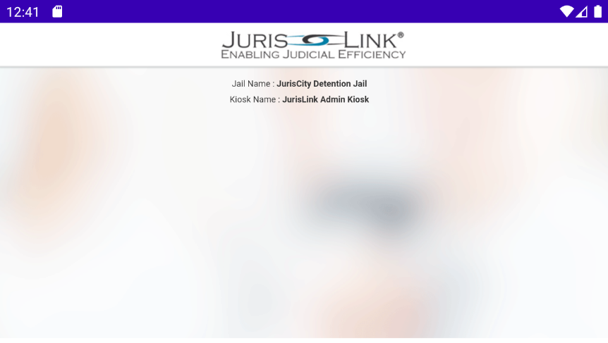
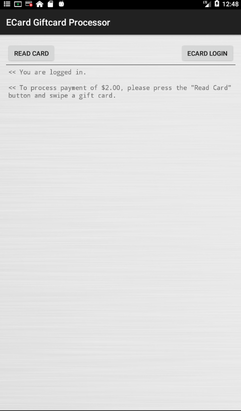
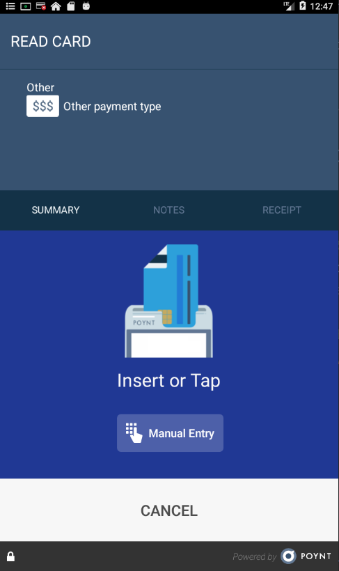
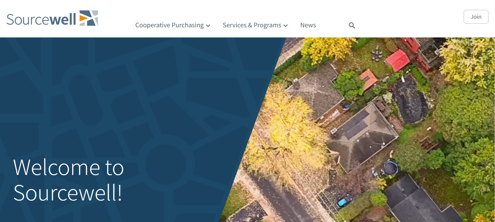

Work Experience
I have developed software for several clients during my freelancing career. You can take a look at my Upwork profile:
Native Android Development: "Aero.Hack Track Splits Stopwatch"
Time - under a month
Engineered a Native Android application using Java. Used by Paralympic athletes as a velodrome track cycling stopwatch.

Minecraft Mod Development: "Orespawn"
Time - several months
Ported one of the most popular Minecraft mods, by the name of "Orespawn", from Minecraft version 1.7.10 to version 1.12.2. Orespawn was written in Java, using the Forge API.

Game Development: "Pope Chess"
Time - About a month
Lead the development of a variant chess game using Java and the LibGDX framework. Programmed fully in-house, including the chess engine. The game was designed for mobile, and was published on the Google Play Store.

Native Android Development: "Web View Application"
Time - under a month
Created an application that provided a web view for a frontend that the client's team had engineered. Developed the application to specification, and provided additional development support to the team.

Native Android Development: "Poynt Gift Card Application"
Time - over a month
Lead the development of an application targeting the Poynt Smart Terminal, which is a POS (point of sale) device. The application provides custom payment through a third party gift card service by leveraging PoyntOS, which is a layer on top of the base android OS, and a SOAP web service provided by a third party.


Drupal Developer
Time - 6 months
Worked for 6 months at Sourcewell on a contract basis. Development was drupal based, leveraging Acquia's Site Studio to construct components needed to build the sites. Gained lots of experience in front end web development.
